Digimon partners and wild encounters added by the mod, grouped by evolution stage.
Every digimon in the mod was hand-modeled by a member of the community. Click a name to see everything they built solo and every card they collaborated on.
Modelers who solo a digimon above Baby II and donate the model to the mod get a dedicated role on my Discord server, plus access to the private spoilers channel where upcoming digimon are shown off before release.
Digivices, training gear, consumables and crafting materials added by the mod, grouped by type.
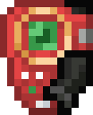
D-Scanner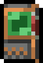
Digivice Burst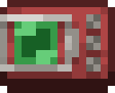
V-Pet Aquan Data
Aquan Data
 Beast Data
Beast Data
 Dragon Data
Dragon Data
 Earth Data
Earth Data
 Holy Data
Holy Data
 Machine Data
Machine Data
 Nightmare Data
Nightmare Data
 Plant/Insect Data
Plant/Insect Data
 Wind Data
Wind Data
 Wind Pack
Wind Pack
 Botamon Digitama
Botamon Digitama
 Chicomon Digitama
Chicomon Digitama
 Jyarimon Digitama
Jyarimon Digitama
 Punimon Digitama
Punimon Digitama
 Bubbmon Digitama
Bubbmon Digitama
 Yuramon Digitama
Yuramon Digitama
 Pipmon Digitama
Pipmon Digitama
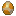
Bommon Digitama Dokimon Digitama
Dokimon Digitama
 Algomon Digitama
Algomon Digitama
 Kuramon Digitama
Kuramon Digitama
 Zurumon Digitama
Zurumon Digitama
 Poyomon Digitama
Poyomon Digitama
 Dragon Bone
Dragon Bone
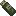
Health Upgrade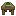
Learning Table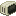
Old Pc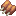
Digi Meat Ribs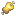
Rotten Digi Meat Blue Card
Blue Card
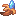
Digi Banana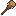
Goblimon Bat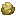
Huanglong OreOres, light sources, a farmable crop and the Digitama (egg) blocks added by the mod. None of these have a dedicated page yet.
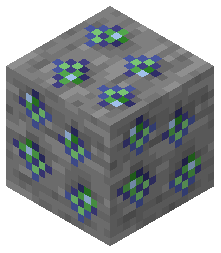
Digi Card Ore Block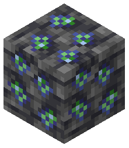
Deepslate Digi Card Ore Block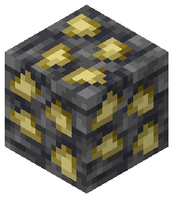
Deepslate Huanglong Ore Block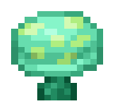
LED Shroom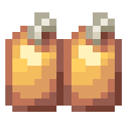
Digimeat Crop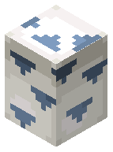
Beast Digitama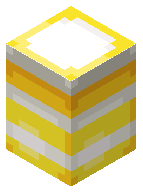
Holy Digitama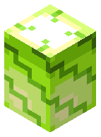
Plant/Insect Digitama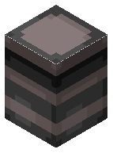
Nightmare Digitama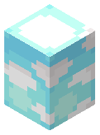
Wind Digitama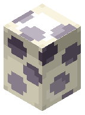
Earth Digitama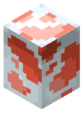
Aquan Digitama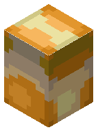
Machine DigitamaTraining Goods are gym equipment your Digimon works out on to build a specific stat. The item form (in the Items section) is a summon: use it and it spawns the training entity your Digimon actually grinds against. High tier entities hit harder per rep and can drop the Data tied to their attribute.
Every toggle and tunable the mod exposes. The server file
(thedigimod-server.toml) lives on the server and applies to every player in the world.
The client file (thedigimod-client.toml) is per-player and only affects the local machine.
Side note: disabling Digimon professions is not a separate config. If you want those off,
set vanilla mobGriefing to false.
thedigimod-client.toml)